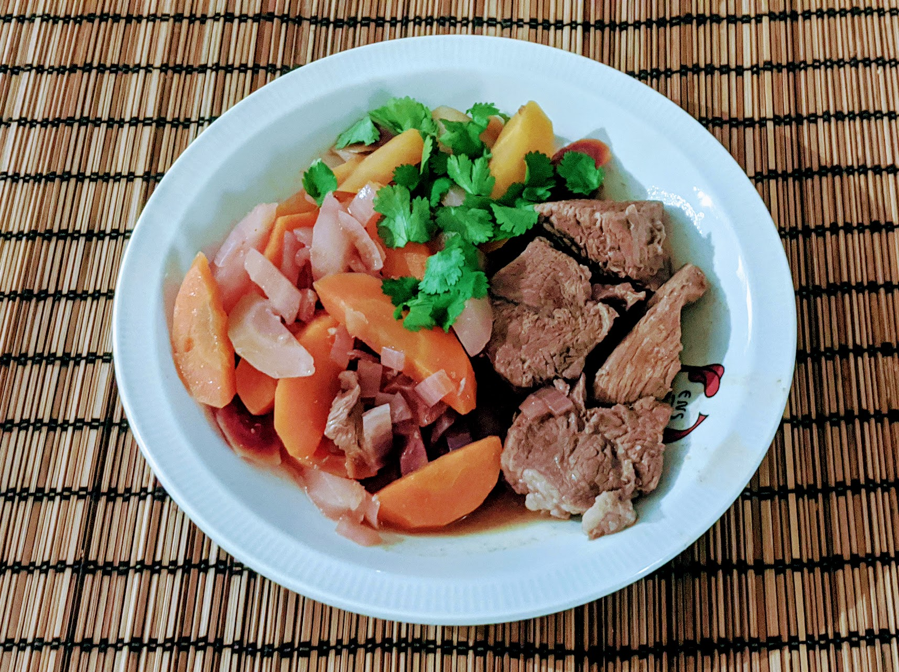

Sauté de veau aux carottes et oranges

Pour 4-5 personnes :
- 700g de veau
- Un kilo de carottes
- Deux grosses oranges
- (facultatif) Un tout petit peu de céleri branche (genre 5cm)
- Un oignon
- Une cuillère à soupe rase de farine
- Une cuillère à soupe bombée de cumin
- Un cube de bouillon de volaille
- (Facultatif) Un demi-bouquet de coriandre
- Sel, poivre, huile d'olive, beurre
- Éplucher les carottes et les couper en biseau (en tranches diagonales, parce que c'est stylé). Éplucher l'oignon et le couper en bouts grossiers. Si t'en as, laver et couper le céleri en petits bouts.
- Faire chauffer de l'huile et du beurre dans une cocotte à feu assez fort, et en parallèle, faire fondre le cube de bouillon dans un demi-litre d'eau bouillante.
- Quand la graisse est bien chaude, y faire roussir les morceaux de viande sur toutes leurs faces cinq bonnes minutes, puis ajouter les oignons et refaire cuire cinq minutes. Pendant ce temps, presser les oranges (pour récupérer environ 250mL de jus).
- Ajouter farine et cumin, bien mélanger pour que ça enveloppe la viande, laisser encore cinq petites minutes, puis déglacer avec le jus d'orange.
- Ajouter légumes et bouillon, et faire cuire une bonne heure à couvert, à feu moyen-doux.
- Enlever le couvercle et faire cuire une bonne demi-heure de plus. Servir chaud, possiblement en parsemant le tout de coriandre ciselée.
Remarque : les proportions sont prévues pour servir ça seul, sans accompagnement. On peut aussi servir du riz en garniture, auquel cas on peut diviser les proportions de légumes par deux.